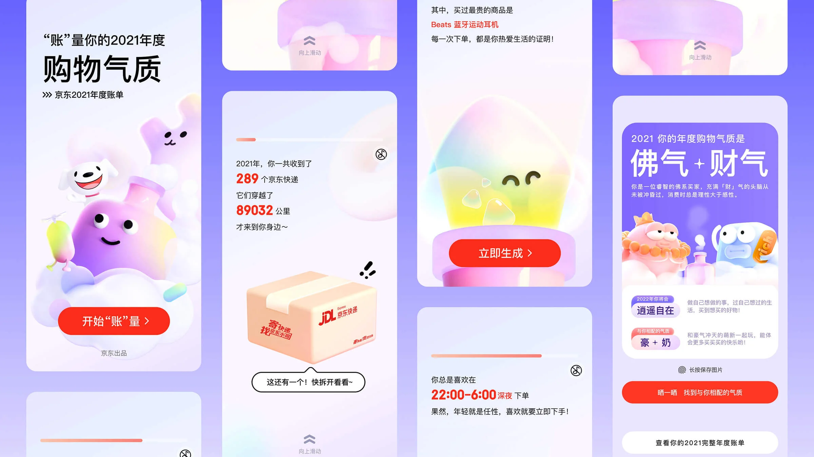
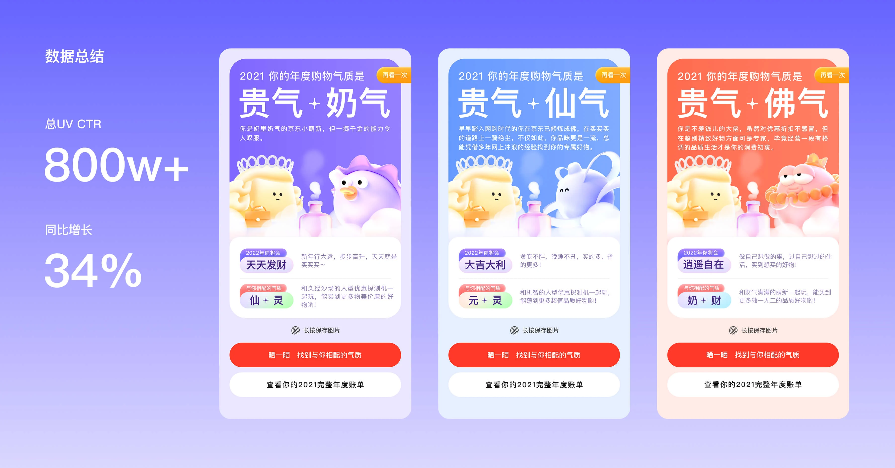
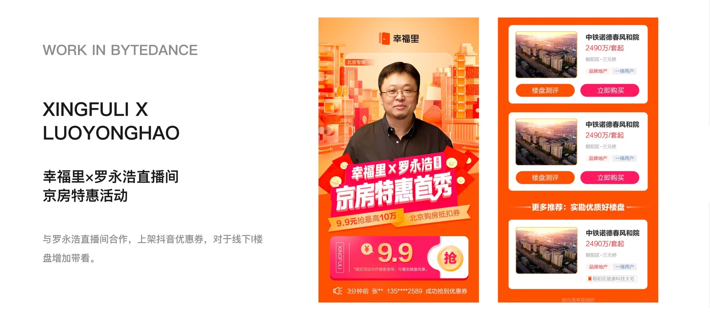
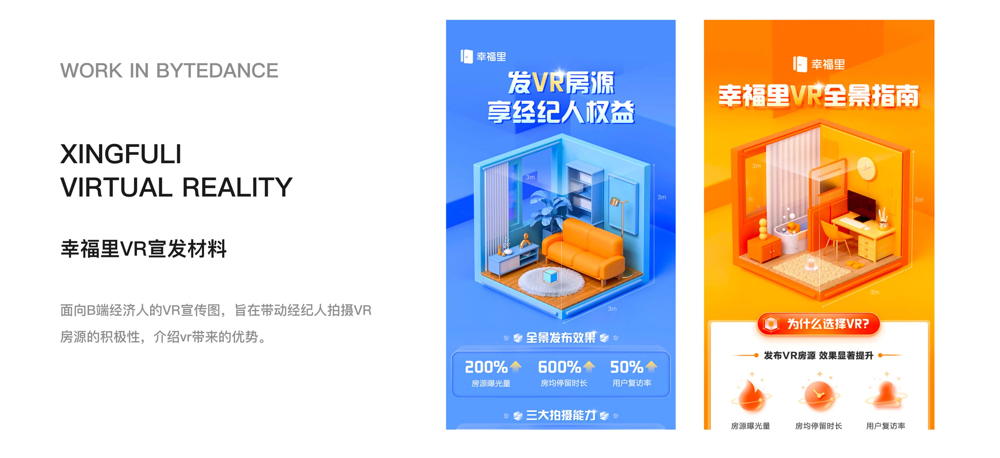
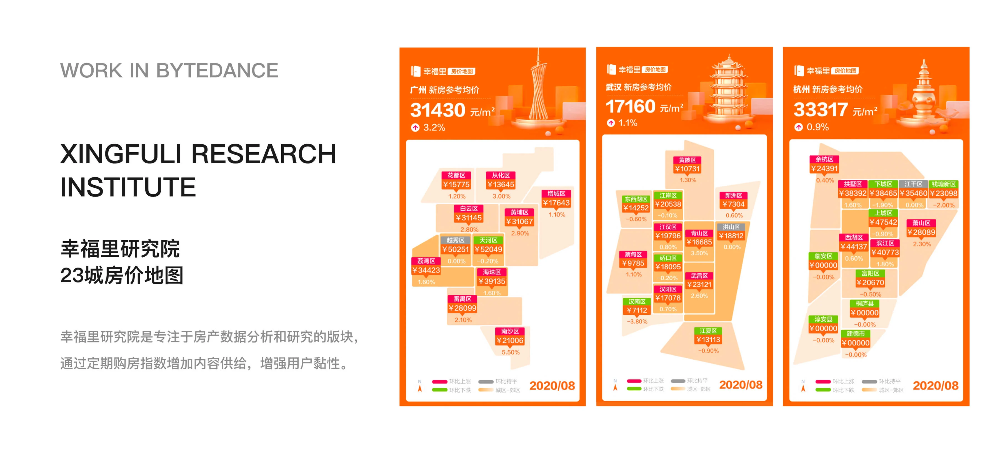

项目概览
时间与类型
时间周期：2023-2024
项目类型：主站营销素材库搭建
我的角色
主 3D 视觉设计师
项目背景
本次项目将 App 中常用图标与配图素材统一3D化，强化视觉品质，并方便各模块调用。


时间周期：2023-2024
项目类型：主站营销素材库搭建
主 3D 视觉设计师
本次项目将 App 中常用图标与配图素材统一3D化，强化视觉品质，并方便各模块调用。
在京东 App 主流程中，红包、京豆、优惠券、礼盒等营销元素被大量使用，但由于各模块长期由不同设计师分别维护，线上素材存在风格不统一的问题：有些偏插画，有些偏简约图标，有些偏写实，导致整体 App 视觉质感不统一。
项目目标是对高频营销元素进行系统盘点和统一重绘，建立一套质感更强、风格一致、可复用的 3D 组件素材库，降低各业务模块重复绘制成本，同时提升整站营销资源的视觉品质和统一感。
素材盘点：梳理主流程中高频使用的营销元素，包括红包、京豆、礼盒等，明确组件库需要覆盖的基础资产范围。
风格定义：确定统一的 3D 视觉语言，包括材质质感、体积感、光影方式和整体精致度。
3D 资产制作：使用 C4D 完成核心营销元素的建模、材质、灯光和渲染，输出可供不同模块直接调用的统一素材。
组件化沉淀：将素材整理为可复用的组件资源，供首页、搜索、商详等场景复用。

3D 组件库上线后，被应用在首页、搜索、商品详情、我的京东等多个核心模块中，替代了过去各模块自行绘制、风格不一的营销素材，获得各模块设计师认可，并提升了团队整体设计效率。
素材库的搭建首先要明确常用的元素内容范围，并明确设计方向。然后制作完成后要封装成便于团队调用的组件。

时间周期：2021.10-2022.01
项目类型：年度用户消费账单回顾
主视觉设计师
负责年度账单主视觉方向探索、流程页设计及营销物料延展，并协同研发完成动画规则制定与页面走查，推动项目完整上线。
京东年度账单是面向用户的年末回顾型营销项目，核心是通过用户全年在平台内的消费行为数据，生成具有个人记忆点的年度内容。

年度账单项目最核心的难点不是页面数量，而是整体项目进展不顺，视觉和创意方向迟迟无法确定。账单产品既需要有记忆点和情绪价值，同时还要控制制作成本，保证最终可以按期上线。
在有限时间内建立可落地的视觉主线，避免账单体验变成普通数据页；同时控制页面体量和视觉复杂度，保证项目能够顺利推进并按期上线。
结构与创意参与：参与前期内容结构梳理和交互创意讨论，协助明确年度账单的浏览流程、内容节奏和体验方向。
主视觉确立：参与多轮探索，确定轻质感 C4D 主视觉，推动方案落地。
核心设计：负责年度账单主要流程页、内容页、转场节奏与关键视觉模块设计；分享页由其他设计师协作完成。
动效与落地协作：协同研发制定动画规则，参与问题跟进与上线复盘，保障体验还原。

2021 年度账单最终顺利上线，累计访问 UV 达 822 万+，较 2020 年大幅提升，也超过 2019 年同期水平。
项目在前期方向反复的情况下完成主视觉收敛、核心页面设计和动效落地，最终保障年度账单体验稳定交付。
大型视觉项目需要提前关注各节点产出时间，并通过设计策略调整，保障项目按期上线。

时间周期：2020.04 - 2021.09
工作类型：营销视觉设计
营销视觉设计师
3D视觉设计师
以 C4D 设计能力作为核心切入点，承担3D视觉内容的设计与输出，补充团队在3D风格方向的设计能力，与插画风格设计形成互补。
作为团队3D视觉设计师，负责建立统一的3D视觉素材库，沉淀可复用的视觉资产，提升团队整体设计效率与一致性。
C端方向：主要负责大型购房节等重点活动页面设计及整体视觉包装，支持业务节点的流量转化与活动传播，并通过数据反馈优化视觉表现。
B端方向：负责面向经纪人群体的宣传物料设计，包括海报、购房手册等，用于业务培训与信息传递，以及制作发放给用户的海报与手册。



视觉升级与体系效率提升
通过3D与营销视觉设计，提升了 App 整体视觉质感，使 App 视觉风格更贴合当时主流的3D视觉表达趋势，增强了品牌与活动表现力。
从视觉执行到产品思维的转变
这段经历让我从单一视觉执行，逐步建立产品视角。实践中，我开始关注活动数据与转化路径，并基于业务目标优化页面结构和信息层级，提升活动效率与信息传达效果。